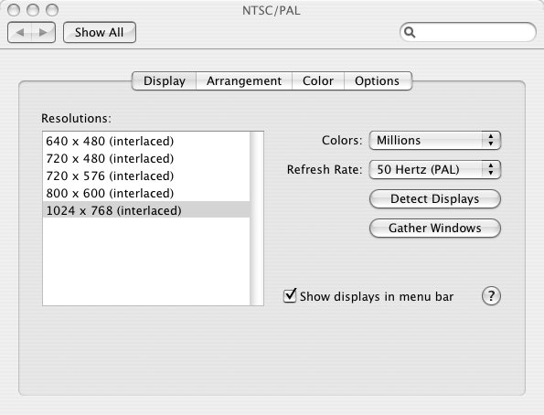

| Jim's Site | |

Last Updated: Thu Nov 22 14:59:02 GMT 2007
Platform: Apple PowerBook G4 12" / Apple Mac OS X 10.4.2

Here's what you need to know about connecting an Apple PowerBook G4 12" running Mac OS X 10.4.2 to a television (or VCR) using Apple's Mini-DVI to Video Adapter:
Switch on/wake the PowerBook and plug the adapter into mini-DVI port on the PowerBook. After a short pause the adapter should be detected, the screen will blank briefly and then should come back on.
Open System Preferences and select Displays (or if you have the displays icon in the menu bar select Displays Preferences... from the menu). You should have a preferences pane entitled Color LCD, click on Gather Windows and you should now have two display preferences panes. The second pane should be entitled NTSC/PAL, and look like this - if it is entitled Display or VGA Display then the video adapter hasn't been detected properly, and it seems most likely that it's faulty. Return it and get a replacement or a refund.
If you connect a TV via the composite or S-Video ports on the adapter you should see the PowerBook displaying on the TV. If it's a sort of grainy black and white instead of in colour, then you're probably trying to display an NTSC signal on a PAL device - select the PAL option in the NTSC/PAL preference pane.
I've found the best quality picture for viewing video is obtained by running the external display as the only display (i.e. not running the built in LCD display at all), which can be achieved by making sure the PowerBook is on mains power, then plug in the video adapter, close the lid of the PowerBook, then plug in the EyeTV DVB dongle (which wakes up the PowerBook with it's lid closed). If you now open the PowerBook lid it will display only using the external display. I find it's most convenient for viewing video to run the external display at the same resolution at the built in LCD display). When running on both the internal and external display, or just on the internal display, I have found that video (particularly horizontal pans) tends to undergo visual tearing.
I recently bought a Mini-DVI to Video Adapter from the Apple Store to allow my Apple PowerBook to display on my TV (so I can use Elgato EyeTV as a PVR).
According to Apple's own web site all you need to do is:
| Simply connect your [...] TV to the mini-DVI port via [...] the Apple mini-DVI to video adaptor (sold separately). |
OK - so I ordered one from the Apple Store.
When it (eventually) arrived I plugged it in to the PowerBook and the TV and... it didn't work at all. I tried it with a VCR (composite) a TV (SCART via composite and S-Video), an old Mac with a TV tuner card (composite and S-Video inputs) and also on my brother's TV/VCR. All systems worked with a camcorder that provides composite and S-Video output using the same cables. It seemed suspicious that the Display Preferences pane that came up made no mention of the video standard (PAL or NTSC) that the TV expected and instead offered me the same options that I got when I plugged in the Mini-DVI to VGA adapter, connected to a non-EDID analog monitor.
It's worth noting that the adapter is provided with no instructions at all (although Apple did include a small instruction booklet with the USB keyboard I ordered at the same time), nor does the Mac Help application in OS X 10.4.2 have anything other than vague advice ("you may need to adjust your display settings"). And the Apple Web Site doesn't have any installation documentation on using the Mini-DVI to Video adapter (the nearest thing is this article which, at the bottom, tells you the resolutions that the adapter supports - none of which matched the options I was being offered). I sent an email to the Apple Store detailing my problems, to see if they had any advice before I returned the faulty item for replacement or refund.
I received a canned response from Apple, badly filled out, suggesting I contacted Apple Care Technical Support:
| Apple Care can be contacted on < enter number> and are open Monday to Friday 8am - 8am, Saturday 10am - 6pm and Sunday 10am - 4pm. |
I found the number from the web site and rang them up. After being bounced around several automated response systems with varying accents I was finally put through to a human being. Unfortunately he was unable to help at all. I couldn't get him to tell me what the display preference pane should look like when the adapter was connected, and in the end I had to end the call because it was clear that I wasn't going to get any useful advice at all. The call cost me £2.80. (I later found out that when you call the Apple Store on their UK FreeFone number (0800-039-1010) you are offered a "Technical Support" option by the automated response system. Another option is to use Skype to call the US Apple Support Line (+18002752273)).
My final resort was to post a request on the Apple Discussion Forums to see if anyone there could help. I got a response indicating that it was not uncommon for the adapter to be faulty - and I should contact Apple for a replacement.
So I rang the Apple Store, and they said they would send me a replacement - 4 days later the replacement arrived, and... it didn't work either. Although not in exactly the same way - this one made a display preference pane show up that said "VGA Display" - but it didn't have any PAL/NTSC options on it. By this point I was beginning to wonder if my PowerBook was faulty - (surely Apple wouldn't send me a broken replacement to a broken product). Either way there was something wrong with something I'd bought from Apple, so all I needed to do was find out which thing it was.
So I went to some local Apple dealers to see if I could narrow down what the faulty part was. First I tried John Lewis, as I figured they had both PowerBooks and TVs in the same department, so at least I should be able to see if either of the adapters Apple had sent me worked with their equipment. Nope - they told me they didn't sell the adapter, so they couldn't help me.
Next stop was Western Computer (an Apple Centre). They didn't have any kind of composite video/S-Video display so I couldn't see if there was any output, but they did let me plug the adapters into a 12" PowerBook. I got the same results as I did on my PowerBook (the "Display" and "VGA Display" preference panes, with no video system options), but no conclusive results.
Finally I tried The Bristol Mac Centre. Steve was very helpful - he tried to get my PowerBook displaying on a projector, over S-Video using my adapters, but had no luck. So I left the adapters with him so he could try them with another 12" PowerBook over the weekend, but when I called back he had had no luck getting them to work either.
All this was very frustrating in one way (I had yet to see any PowerBook, let alone mine, displaying on a TV), but at least it reassured my that it didn't seem to be my PowerBook that was at fault. I just needed some conclusive proof.
I posted one final plea for help to the Apple Discussion Forums - asking if there was anyone who did actually have a 12" PowerBook displaying using an Apple Mini-DVI to Video Adapter (I was beginning to think it was all some kind of elaborate hoax), and if they did, could they send me a screen grab of the Display Preferences pane for the external display. Or if there was anyone who had it working locally whether they would mind if I popped round and tried my PowerBook out so I could make sure it worked.
Sam responded to my plea - and as he was local he offered to come round with a genuine working adapter so I could try it. We got my PowerBook displaying on the TV using his adapter and also verified that neither of the adapters Apple had sent me would work with his PowerBook either.
So finally I had the proof I needed - Apple had sent me a faulty adapter, and then when I had complained, replaced it with another faulty adapter. So I rang them again and they said they would send another, but they couldn't test it before they sent it. Hopefully this one will "just work".
This one took five days to arrive - but when it did I plugged it in and straight away got the NTSC/PAL display preferences pane. I tried it plugged into my VCR and it worked fine. At last, a month after I was expecting it, I am finally able to watch DVD/TV/Photos from my PowerBook on my TV.
At Apple's request I returned the two faulty video adapters to them and requested a refund for the postage costs (£1.79) as well as the cost of the useless call to their Technical Support line (£2.80) - a grand total of £4.59. Leaving them the option of providing some form of goodwill compensation for all the hassle I've had to go through to get a simple component to work. They refunded me £4.58.
I've learned the following things:
Apple should resolve the following issues:
| 01 Sep: | I placed an order with Apple. One of the items was on a 1 week lead time, and Apple estimated the ship date as "on or before the 8th September". |
|---|---|
| 09 Sep: | The order is still marked as shipping "on or before the 8th September". I sent off an email to Apple to ask what was going on with my order, and I got a message back that due to high demand the expected ship date of my order was now "by 15th September". Although the order tracking on the Apple Store web site still said "on or before the 8th September". |
| 10 Sep: | I got a "personalised" reply to my email (that started "Dear XXXX"), that said they would look into what was holding the order up. |
| 12 Sep: | I got a dispatch notification saying that my complete order had been shipped and I could expect it in 2-3 days. |
| 14 Sep: | The order arrived. But the Mini-DVI to Video adapter didn't work at all. |
| 15 Sep: | I tried the adapter on several systems, and verified that all the cables were functioning. I sent a detailed report of the problem via email to Apple to get them to confirm that the adapter was not being detected correctly by the PowerBook. |
| 19 Sep: | I got a canned email response, telling me to phone Technical Support. I had a useless phone call with Apple Technical Support |
| 20 Sep: | I started a thread in the Apple's Discussion Forums. |
| 21 Sep: | I got a reply in the Forums saying it was not unusual for this adapter to be faulty. |
| 22 Sep: | I rang the Apple Store and they said they would send me a replacement. |
| 25 Sep: | I tried the original adapter on another TV. No good. |
| 26 Sep: | The replacement adapter arrived. But that was no good either. I posted an update on the Forum. |
| 28 Sep: | Went to Apple Dealers to try and confirm the faulty part. John Lewis (no use), Western Computer (plugged in), Bristol Mac Centre (projector). Steve borrowed the adapters to test over the weekend. |
| 30 Sep: | I posted another follow-up on the boards to try and find someone with a working adapter. |
| 04 Oct: | Steve had no luck with the adapters. I got in touch with Sam who had responded in Apple's Forums. |
| 05 Oct: | Sam came round. His adapter worked with my PowerBook. I rang Apple - they said they'd send another replacement. |
| 10 Oct: | The second replacement adapter arrived, and worked straight away. |
All information on this site is copyright © 1994-2020 Jim Randell